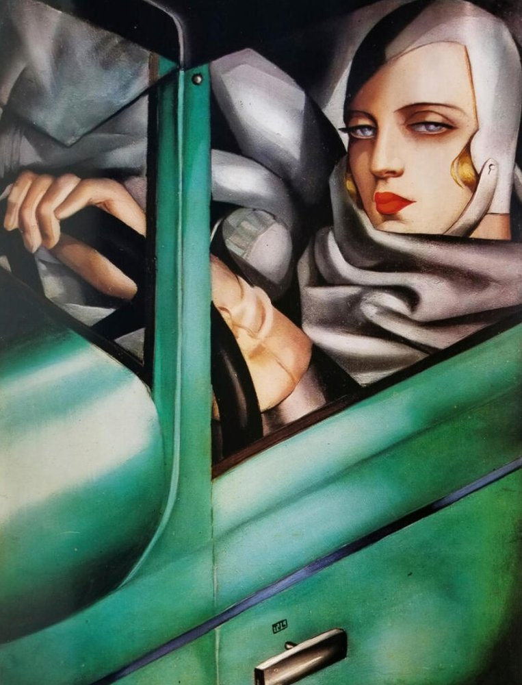

Autoportrait (Tamara in a Green Bugatti)
Tamara de Lempicka · 1929 · Oil on panel · 35 × 27 cm · Private collection
In copyright. Look and learn: shown for study, not for download.
The German fashion magazine Die Dame commissioned this self-portrait for its cover, after its editor met de Lempicka on vacation in Monte Carlo. She painted it in Paris in 1929, on a panel 35 centimetres high. She did not own a Bugatti; her own car was a small yellow Renault. The picture puts the steering wheel on the left, although the Bugatti models of the period had it on the right.